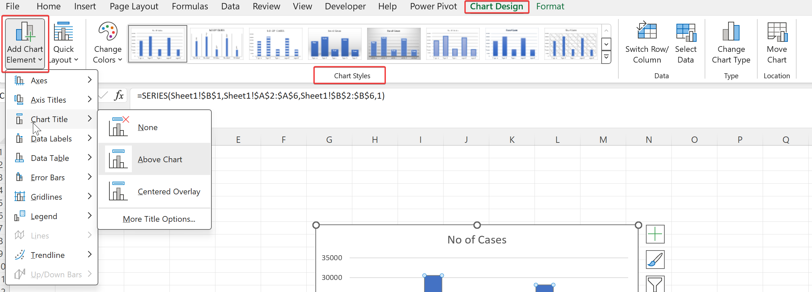

3 Creating Visuals
Data visualization is a graphical representation of data. It can transform your raw data into meaningful visual stories and identify trends faster. It also helps in communicating complex information effectively.
This chapter provides a walk through of Excel’s fundamental visualization capabilities. Rather than going deeply into in depth details, we aim to make you confident in navigating menu options independently. We assume that you know what you want, and just require guidance on execution. For a comprehensive understanding of visualization principles, we strongly suggest referring a good general visualization book. Our recommendation is The Truthful Art by Albert Cairo. It doesn’t teach the mechanics of creating visualizations, but instead focuses on what you need to think about in order to create effective graphics.
3.1 Creating Charts
In this section, we’ll walk through the steps to create charts in Excel, allowing you to convey your message with precision and impact.
Prepare Your Data
- Ensure your data is organized in a table format with clear labels for rows and columns.
- Select the data range you want to include in your chart, including headers if applicable.
Insert a Chart
- With your data selected, navigate to the “Insert” tab in the Excel ribbon.
- Click on the desired chart type from the “Charts” group. Common options include Column, Line, Pie, Bar, and Scatter.
- Selecting the desired chart type will automatically create a basic chart using your selected data.
Customize Your Chart
- Once your chart is created, you can customize it to better suit your needs.
- Click on the chart to select it, and then navigate to the “Chart Design” and “Chart Format” tabs in the ribbon.
- From here, you can change chart elements such as titles, axes labels, legends, colors, and styles.
Add Data Labels and Annotations (Optional)
- To make your chart more informative, you can add data labels, annotations, or other elements.
- Right-click on the chart element you want to modify and select “Add Data Labels” or “Add Chart Element” to insert annotations, such as trendlines or error bars.
Share Your Chart
- To share your chart with others, you can either share the entire workbook or copy and paste the chart into other documents or presentations.
3.2 Customizing Charts
You can customize the chart created from “Chart Design” and “Format” tabs in the ribbon.
Chart Elements: Excel provides an extensive range of chart elements to enhance clarity and aesthetics. These elements include titles, axis labels, data labels, gridlines, legends, and trendlines. Each element can be customized to suit your presentation needs.
Chart Styles: Excel offers pre-designed chart styles, enabling you to quickly apply professional-looking formatting to your charts. These styles have different color schemes, line weights, and shading effects, allowing you to match your chart’s appearance with your overall document or presentation theme.

- Formatting: Excel provides different formatting options to customize the appearance of your charts and tailor them to your specific requirements. You can adjust colors, fonts, borders, and other visual attributes to create visually appealing and professional-looking charts.
3.3 Using Shapes
Excel provides variety of customizable graphic images known as shapes. You can use them to display text or add some visual appearance to a worksheet.
3.3.1 Inserting Shapes
- To insert a shape, navigate to the “Insert” tab on the Excel ribbon. Click on the “Shapes” button located in the “Illustrations” group. A dropdown menu will appear, offering a variety of shape categories to choose from, including basic shapes, arrows, flowchart elements, and more.
Once you’ve chosen a category, simply click on the desired shape to select it. Your cursor will now transform into a crosshair, allowing you to draw the shape directly onto your worksheet. Click and drag to define the size and proportions of the shape.
Excel also allows for the insertion of custom shapes. To do this, select “Edit Shape” from the dropdown menu after clicking on a shape. Here, you can modify the shape’s vertices and curves to create a custom design tailored to your needs.
3.3.2 Formatting Shapes
- Fill and Outline: After inserting a shape, you can customize its appearance using the formatting options available in the “Format Shape” pane. To access this pane, right-click on the shape and select “Format Shape” from the context menu. Here, you can adjust the fill color, outline color, and effects such as shadows and reflections.
Shape Styles: Excel offers a range of predefined shape styles that can be applied with a single click. These styles include variations in fill color, outline weight, and effects, allowing you to quickly achieve a polished look for your shapes.
Size and Position: Precise control over a shape’s size and position is essential for achieving a professional layout. Use the sizing handles to adjust the dimensions of the shape, or enter specific values in the “Size & Properties” pane. To align multiple shapes, utilize the alignment tools available in the “Format” tab.
Grouping and Layering: When working with multiple shapes, grouping them together can simplify manipulation and formatting. Select the shapes you wish to group, right-click, and choose “Group” from the context menu. Additionally, you can change the stacking order of shapes using the “Bring Forward” and “Send Backward” options.
3.3.3 Creating Dynamic Labels
Dynamic labels are the labels that changes with the changes in the underlying data. The below figure illustrates this. The selected text box shape is linked to cell E11 in Calculations worksheet. As the value of this cell changes, the text box displays updated value. To add dynamic labels, select the text box or shape and enter the cell reference in formula bar.